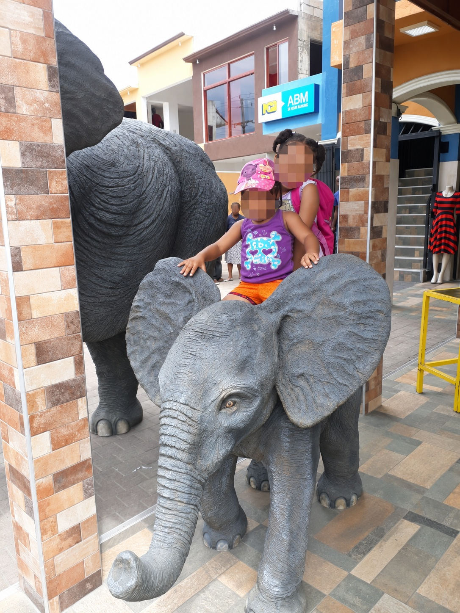

Spanish Town · Jamaica
Heritage Mall Elephant
Monumental animal sculpture

The project
An elephant.
In public space.
A large-scale elephant sculpture created as a sculptural installation for Heritage Mall.
Spanish Town · Jamaica
Monumental animal sculpture

The project
A large-scale elephant sculpture created as a sculptural installation for Heritage Mall.